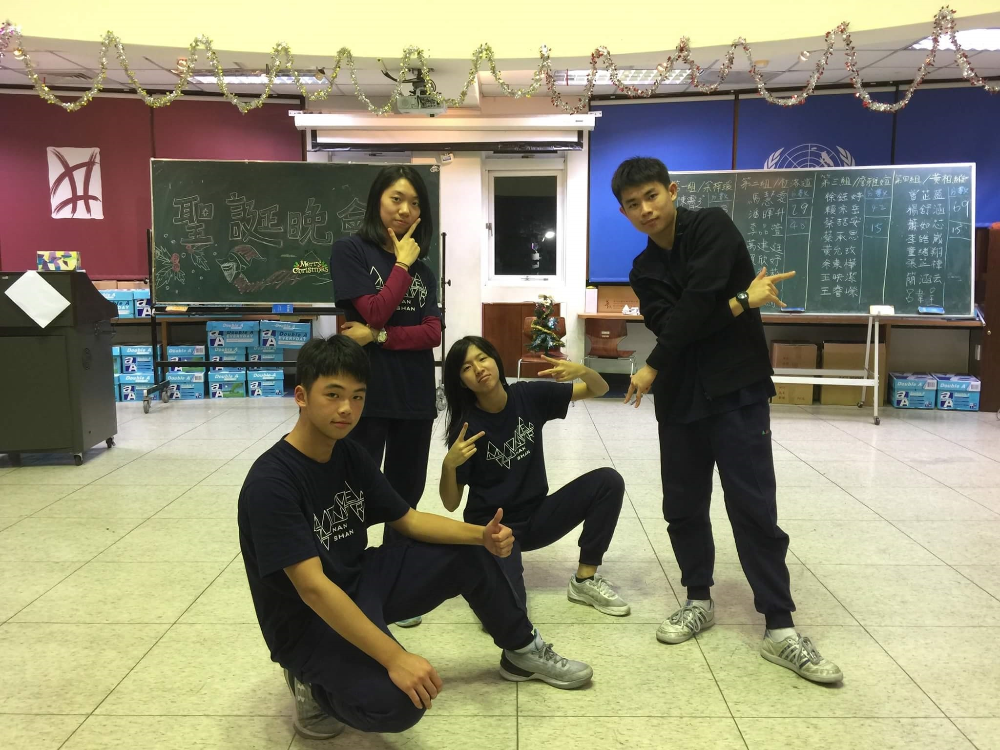
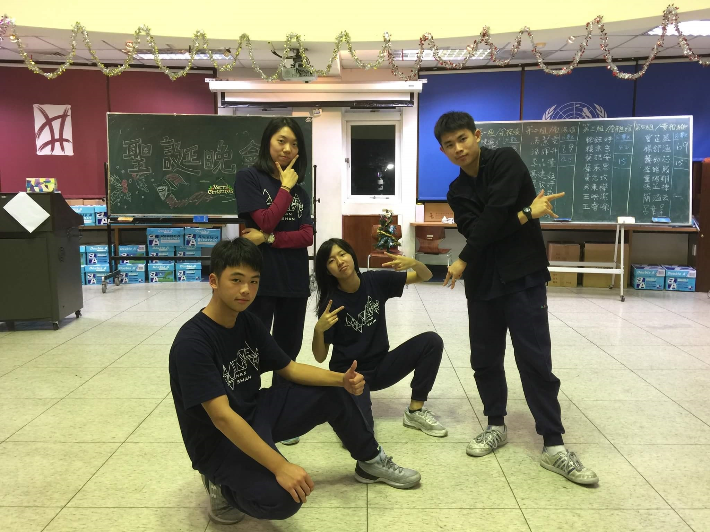

自我描述
從小對自我要求高，能動、能靜，熱衷於參與各種活動，好勝心強、學習認真負責且具領導能力，更擔任熱舞社社團社長籌辦活動，並發揮獨創力規劃社團事務。而在模聯中，甚至在高一三月獲得前往北京大學參與模聯會議，目睹了學術界的巔峰，目前模聯方面不在以代表為目標，朝著主席努力。同時亦熱心助人，除了幫助創世基金會募集發票幫助植物人，在未來更打算參與服務性社團，為偏鄉的孩童提供教育。
從小對自我要求高，能動、能靜，熱衷於參與各種活動，好勝心強、學習認真負責且具領導能力，更擔任熱舞社社團社長籌辦活動，並發揮獨創力規劃社團事務。而在模聯中，甚至在高一三月獲得前往北京大學參與模聯會議，目睹了學術界的巔峰，目前模聯方面不在以代表為目標，朝著主席努力。同時亦熱心助人，除了幫助創世基金會募集發票幫助植物人，在未來更打算參與服務性社團，為偏鄉的孩童提供教育。
